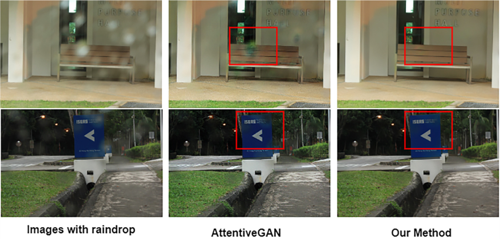

|
Han Yi Han Yi Hello! I am currently a first-year Ph.D. student at the University of North Carolina at Chapel Hill, under the guidance of Professor Gedas Bertasius. I completed my Master's degree at the National University of Singapore (NUS) in 2024. During my time at NUS, I also served as a research intern at the NExT++ Research Center, where I was advised by Prof. Tat-Seng Chua, Prof. Zhedong Zheng, and Prof. Xiangyu Xu. I love basketball, football, rap music, and fitness. Email / CV / Google Scholar / Github |
{kind=link}
ResearchI am interested in research related to deep learning and computer vision. My work focuses on NeRF, 3D generation, and video generation. |

|
Progressive Text-to-3D Generation for Automatic 3D Prototyping
Han Yi*, Zhedong Zheng, Xiangyu Xu, Tat-seng Chua arXiv, 2023 A progressive strategy that learns text-to-3D in a coarse-to-fine manner. |
|
Image Deblurring With Image Blurring
Ziyao Li, Zhi Gao, Han Yi, Yu Fu, Boan Chen IEEE Transactions on Image Processing (TIP), 2023 Proposed a novel motion deblurring framework using Blur Space Disentangled Network (BSDNet) and Hierarchical Scale-recurrent Deblurring Network (HSDNet) to effectively address real-world blur, achieving state-of-the-art results. |
|
|  |
Single image deraindrop leveraging luminance priors and context aggregation
Yi Liu, Zhi Gao, Tiancan Mei, Han Yi Neurocomputing, 2024 Developed a recurrent single-image deraindrop approach utilizing luminance priors and contextual feature aggregation, achieving superior performance in restoring color and texture consistency. |
Services
Reviewer: ACM MM 2024, ICLR 2025 |
|
This webpage is adapted from Jon Barron's page. |